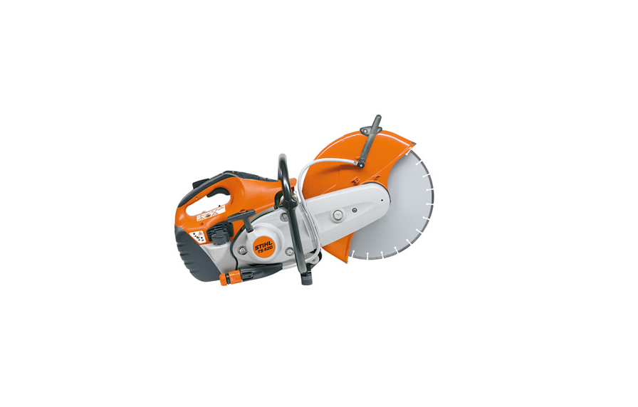
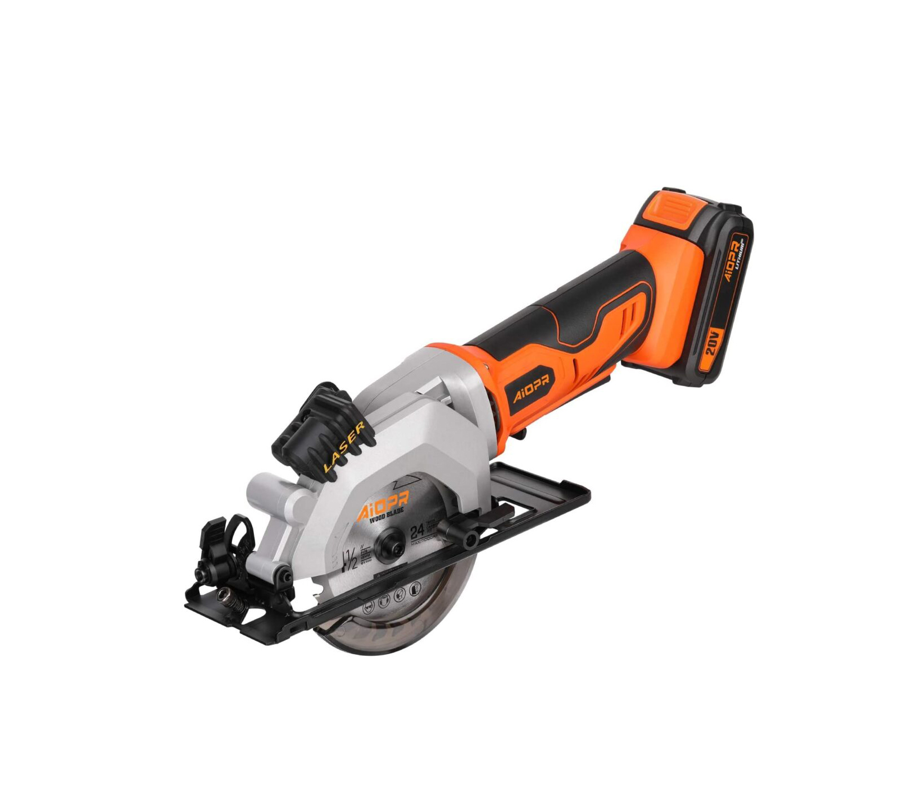

Angle Grinder
The angle grinder is a spinning disc that moves at extremely high RPMs.
Angle grinders are used for many different applications, it all depends on the disc you choose.

Side Grinder
Side grinders are a handheld power tool which cut, grind, and polish metal and non-metal objects.
A compressed tool, petrol engine, or an electric motor is required to power these tools.
Biscuit Joiner
A plate joiner consists of a rounded saw blade that helps cut small-sized holes to join wood pieces.
The compressed biscuit is then glued together to stay apiece.

Concrete Jigsaw
A Concrete Saw is an advancement from the regular circular saw we had seen earlier.
It is designed the same way, but a bit larger in size and more powerful.

Cordless Jigsaw
A cordless jigsaw is a small power tool that is used to cut curved lines on a wooden piece
and is also used for curving out complicated and curved lines.

Circular Saw
A circular saw is a power tool that features a toothed disc blade in the middle.
The disc blade rotates on its axis and eventually cuts through the wooden piece you are applying it on.
Jackhammer
The jackhammer is used when you are working on construction sites,
you need to break solid stones or concrete bricks at times..
Orbital Saw
Orbital sanders are a specialized tool that features a vibrant sanding surface.
As the name implies, this sander is circular in shape and functions in a rotating motion.
Oscillating Multi-Tool
An oscillating multi-tool can be used for trimming, sanding, pipe cutting, paint removal—you name it.
Pneumatic Tool
Pneumatic tools are powered by compressed air and include chippers, drills, hammers, and sanders.
Power Sander
It features an electric motor, a pair of cylinders, and sandpapers, helping in trimming and finishing wooden objects.
The purpose of smoothing rough surfaces, leveling out and shaping objects.

Reciprocating Saw
Contrary to a jigsaw, a reciprocating saw has a blade at the front of it.
The blade acts the same way as a jigsaw, but the movement of it is back and forth.